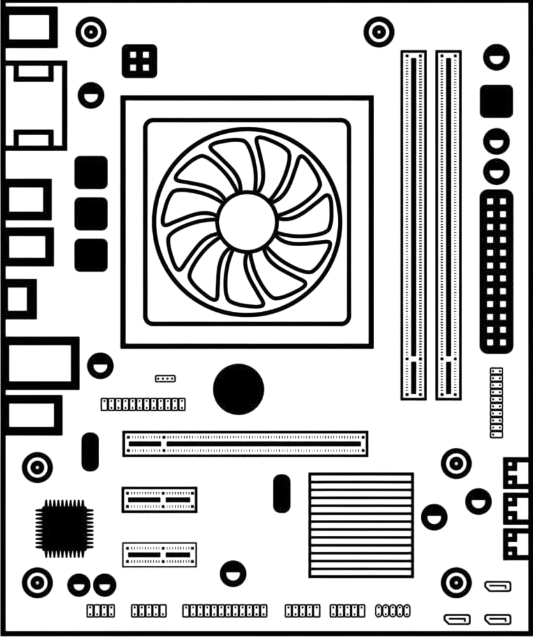
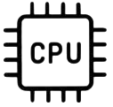
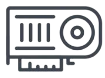
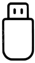
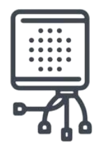

O que é essa página?
Seja muito bem-vinda à nossa página interativa de hardware! Aqui, desvendamos os mistérios do coração do computador de um jeito super simples e visual.
No centro da tela, você encontra a imagem de uma placa-mãe, onde você pode descobrir
a função dos componentes básicos de um computador, apenas passando o cursor do mouse
sobre o componente que deseja conhecer.
Assim que você posiciona o mouse em cima de uma peça (como o
processador, os slots de memória ou os conectores traseiros),
uma caixinha explicativa aparece na hora na tela, mostrando o
nome do componente, um ícone ilustrativo e um texto amigável
contando qual é a função real dele no circuito.
É uma forma prática, divertida e totalmente visual de aprender como o
seu computador funciona por dentro! Explore a placa, passe o mouse
pelos componentes e vire uma expert em hardware num piscar de olhos.


Processador (CPU) e soquete
Central Processing Unit
O processador, ou CPU (unidade central de processamento), é o componente que executa as instruções dos programas e faz os cálculos lógicos e matemáticos. Ele é encaixado no soquete (o encaixe próprio da placa-mãe, que precisa ser compatível com o modelo do processador) e, por esquentar muito, fica embaixo de um cooler (dissipador de calor com ventoinha), como mostra o desenho. Entre o processador e o cooler vai uma camada de pasta térmica.
Conectores SATA
Armazenamento: HD e SSD
São os conectores de dados SATA (Serial ATA), onde se ligam os dispositivos de armazenamento: o HD (disco rígido) e o SSD (unidade de estado sólido), além de drives de DVD. O armazenamento é uma memória não volátil: guarda o sistema operacional, os programas e os arquivos mesmo com o computador desligado. Placas mais novas também têm o slot M.2, para SSDs NVMe, mais rápidos.
Slots de memória RAM (DIMM)
Memória principal
São os encaixes dos pentes de memória RAM (Random Access Memory, memória de acesso aleatório). A RAM é a memória de trabalho do processador: guarda temporariamente os dados dos programas em execução. Ela é volátil, ou seja, perde tudo ao desligar o computador. Sem ela, o processador teria que buscar tudo no armazenamento, que é muito mais lento. Os pentes têm gerações (DDR3, DDR4, DDR5) que não são compatíveis entre si.

Slots PCI Express (PCIe)
Slots de expansão
São os encaixes para placas de expansão, que adicionam funções ao computador. O slot maior (PCIe x16) é usado pela placa de vídeo (GPU, unidade de processamento gráfico), que faz o processamento paralelo de gráficos e imagens. Os slots menores (PCIe x1) recebem placas de rede, de som e de captura. O número após o "x" indica quantas pistas (canais de dados) o slot tem.

Painel de E/S traseiro (I/O)
Entrada e saída
É o conjunto de conectores externos da placa-mãe, que aparecem na parte de trás do gabinete: portas USB, conector de rede RJ-45, saídas de vídeo (VGA, HDMI, DisplayPort), conectores de áudio P2 e, em placas antigas, as portas PS/2 de teclado e mouse. Por eles os periféricos (dispositivos externos) trocam dados com a placa.

Conector de alimentação ATX de 24 pinos
Recebe a energia da fonte
É o conector principal de energia da placa-mãe. Ele recebe da fonte de alimentação as tensões de +12 V, +5 V e +3,3 V (volts) e a placa-mãe as distribui, por meio de reguladores de tensão (VRM), para cada componente, na medida exata para funcionar sem queimar. O processador recebe energia também por um conector separado, o ATX12V de 4 ou 8 pinos.
Placa-Mãe
A placa-mãe é a peça central e mais importante de qualquer computador, funcionando como o verdadeiro sistema nervoso da máquina. Sua principal função é conectar e permitir a comunicação entre todos os outros componentes essenciais, como o processador, a memória RAM, as placas de vídeo e os discos de armazenamento. Além de servir como essa grande base de encaixe, ela também é responsável por distribuir a energia elétrica vinda da fonte de maneira controlada para cada parte do sistema e por abrigar todas as conexões externas que usamos no dia a dia, como as portas USB e as saídas de áudio. Sem ela, os componentes seriam apenas peças isoladas e incapazes de trabalhar juntas, tornando a placa-mãe a base fundamental que transforma circuitos espalhados em um computador funcional e inteligente.